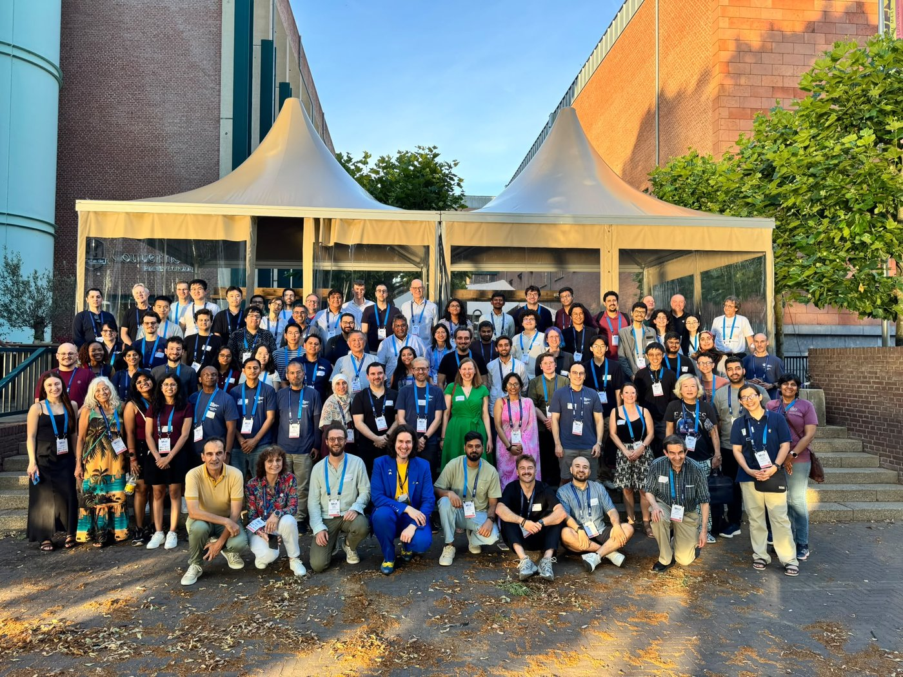
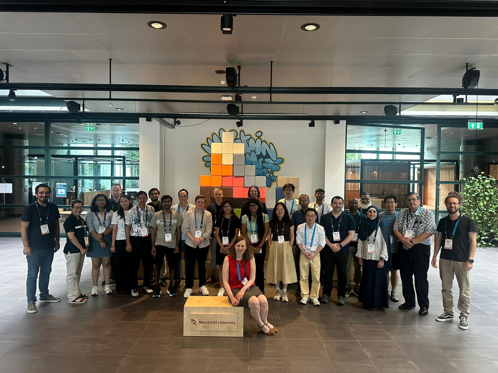
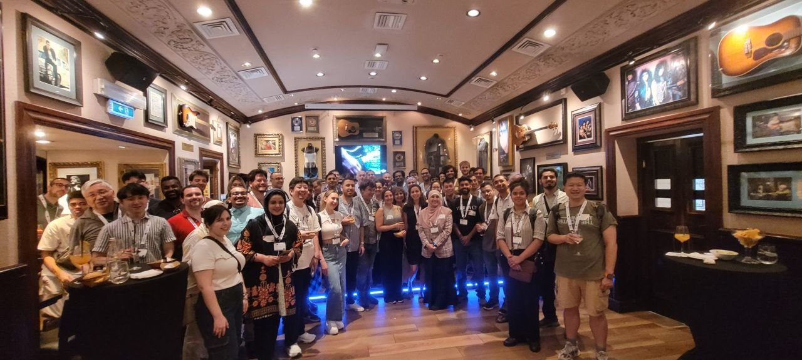
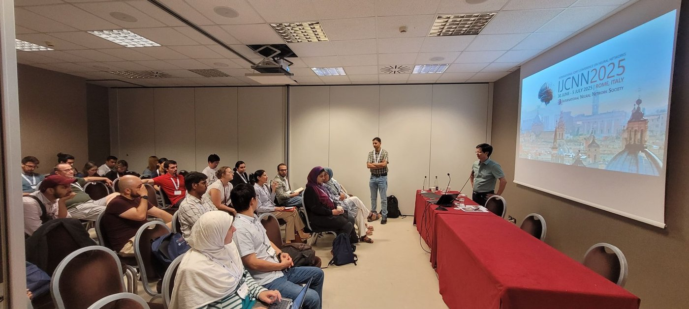
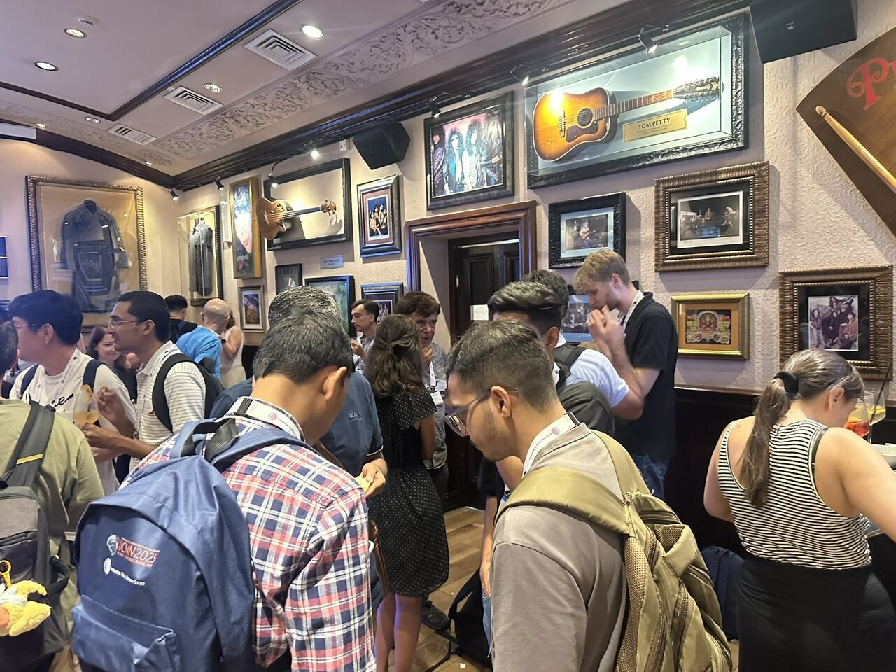

Service
Leadership, service and recognition
Editorial and professional-society leadership, institutional service, outreach, and recognition across the field.
Professional-society leadership
Lead, IJCNN Mentoring Program, IEEE WCCI 2026
Joint Lead, IJCNN Mentoring Program, 2024 and 2025
Vice-Chair, IEEE CIS Mentoring and Skills Development Sub-Committee
Member, IEEE CIS Diversity and Inclusion Subcommittee
Co-Chair, Women in Artificial Intelligence
Editorial and peer review
Academic Editor, PLOS ONE
Journal reviewer
Program committee member
Institutional leadership, UNSW Canberra
School Executive Member at Large
Faculty AI Education Strategy Workgroup
AI Discipline Coordinator
Equity, diversity and outreach
Robotics Activity Lead, National Youth Science Forum
Robotics and AI lead, Young Women in Engineering
Women in Engineering Coordinator, UNSW Canberra
Mentor, WOMEN@UNSW Canberra Champions Program
Memberships and recognition
IEEE Senior Member
Treasurer, Canberra ACM-W Chapter
Keynote, Inspirational Women
Dell EMC Award of Distinction, 2017
IBM Big Data Developer Instructor Award, 2017
Unsung Hero recognition
In the field
Mentoring across the Society's flagship conferences




